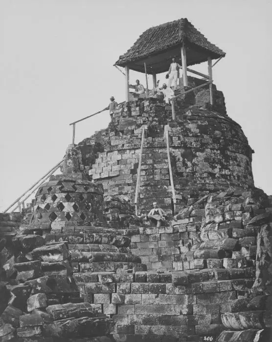
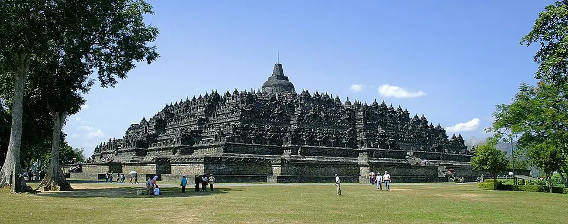
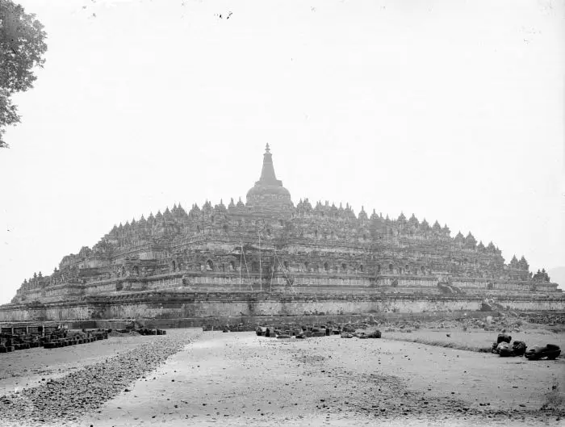
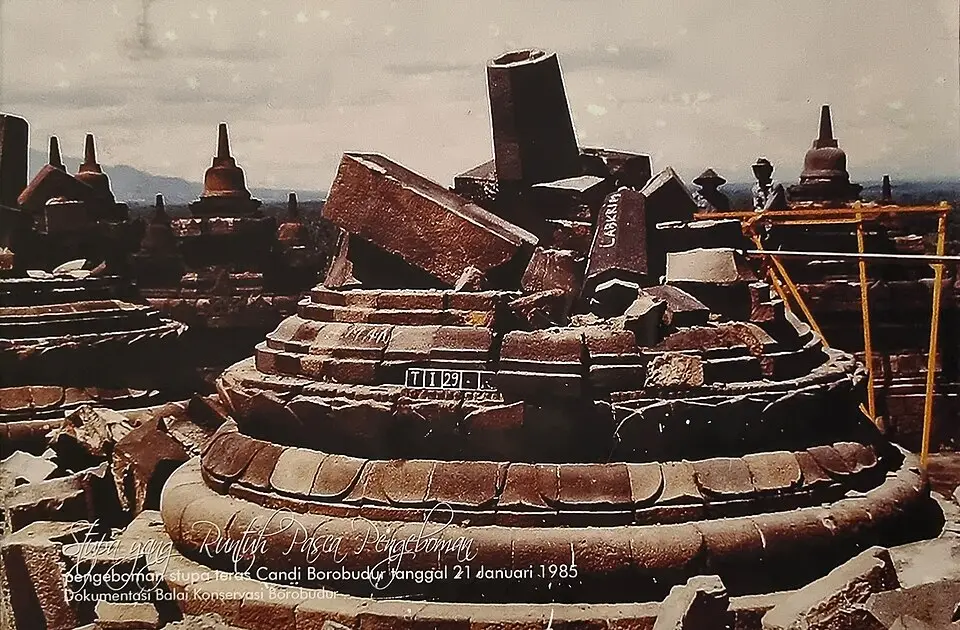

Borobudur dưới lớp tro và rừng
Năm 1814, một kỹ sư được lệnh vào rừng gần làng Bumisegoro tìm một "công trình lớn" mà dân địa phương kể lại. Hai tháng sau, 200 người đã phát quang được phần lớn ngôi đền Phật giáo lớn nhất thế giới, nơi gần như không ai còn đến suốt nhiều thế kỷ.

Năm 1814, trong một chuyến công cán ở Semarang, Thomas Stamford Raffles, người đứng đầu chính quyền Anh trên đảo Java, nghe kể về một công trình lớn nằm sâu trong rừng gần làng Bumisegoro. Ông không tự đi. Ông cử Hermann Cornelius, một kỹ sư người Hà Lan từng làm lộ ra quần thể đền Sewu năm 1806 đến 1807. Thứ Cornelius tìm thấy là một ngọn núi đá với 2.672 tấm phù điêu và ban đầu có 504 pho tượng Phật. Câu hỏi đến nay chưa ai trả lời chắc: vì sao người ta bỏ nó lại?
Sách Babad Mataram kể năm 1757, một thái tử Yogyakarta thương "người hiệp sĩ bị nhốt trong lồng", tức pho tượng Phật trong bảo tháp đục lỗ, nên lên thăm.
Hai tháng, hai trăm người
Cornelius cùng 200 người đốn cây, đốt cỏ, xúc đất trong hai tháng. Vì sợ công trình sụp đổ, ông không đào hết được các hành lang. Ông gửi báo cáo kèm bản vẽ cho Raffles. Raffles chỉ nhắc chuyện này vài câu trong cuốn The History of Java năm 1817 và chưa từng tới tận nơi, nhưng ông vẫn được ghi công là người "tái phát hiện", vì đã đưa ngôi đền ra trước mắt thế giới.
Thật ra Borobudur chưa bao giờ bị quên hoàn toàn. Người Java quanh vùng vẫn biết nó, chỉ là gắn nó với điềm xui. Sách Babad Tanah Jawi kể một kẻ nổi loạn chống vua Mataram năm 1709 gặp họa vì ngôi đền. Sách Babad Mataram kể năm 1757, một thái tử Yogyakarta thương "người hiệp sĩ bị nhốt trong lồng", tức pho tượng Phật trong bảo tháp đục lỗ, nên lên thăm. Về cung, thái tử ngã bệnh và chết một ngày sau.
Năm 1835, Christiaan Lodewijk Hartmann, quan đứng đầu vùng Kedu, làm lộ ra toàn bộ quần thể. Bức ảnh đầu tiên về đền do Isidore van Kinsbergen chụp năm 1872. Nhưng tìm lại được ngôi đền không trả lời được câu hỏi lớn nhất: vì sao người ta bỏ nó đi?
Vì sao bị bỏ rơi


Không có văn bản nào ghi lại việc xây Borobudur hay mục đích của nó. Theo cách phân kỳ của Jacques Dumarçay, việc xây bắt đầu khoảng năm 780 dưới triều Sailendra và hoàn tất khoảng năm 833. Văn bia Karangtengah năm 824 và Tri Tepusan năm 842 có nhắc một công trình thiêng, có thể chính là Borobudur.
Thời điểm người ta thôi hành hương thì không ai biết. Giả thuyết thứ nhất là núi lửa. Trong khoảng năm 928 đến 1006, vua Mpu Sindok dời kinh đô vương quốc Mataram sang Đông Java sau một loạt vụ phun trào. Có ý kiến cho rằng trận phun trào lớn của núi Merapi năm 1006 đã phủ tro khắp Trung Java, nhưng bằng chứng thời đó chưa đủ để khẳng định. Đền nằm giữa hai cặp núi lửa Sindoro, Sumbing và Merbabu, Merapi, nên thuyết tro bụi nghe hợp lý, nhưng vẫn chỉ là thuyết.
Giả thuyết thứ hai, được nhà khảo cổ Indonesia R. Soekmono nhắc tới, là ngôi đền bị bỏ khi dân Java chuyển sang đạo Hồi vào thế kỷ 15. Một dấu vết muộn cho thấy nó chưa biến mất hẳn: năm 1365, sách Nagarakretagama thời Majapahit còn nhắc mơ hồ đến "ngôi chùa ở Budur". Ra khỏi rừng rồi, ngôi đền lại gặp một kiểu mất mát khác.
Từ món quà lưu niệm đến di sản


Phát hiện lại chưa phải là được bảo vệ. Năm 1896, vua Chulalongkorn của Xiêm thăm Java và được phép chở về tám xe tượng, gồm khoảng ba mươi mảnh phù điêu, năm tượng Phật, hai tượng sư tử và một tượng hộ pháp. Nhiều món nay ở Bảo tàng Quốc gia Bangkok. Năm 1885, kỹ sư Jan Willem IJzerman phát hiện chân đền có một lớp đế bị che khuất, trên đó cũng có phù điêu.
Theodoor van Erp trùng tu từ 1907 đến 1911 nhưng không giải quyết được chuyện thoát nước. Đợt trùng tu lớn của Indonesia và UNESCO kéo dài từ 1975 đến 1982, tháo ra hơn một triệu khối đá, đánh số, làm sạch rồi lắp lại, với khoảng 600 người và chi phí gần 6,9 triệu đô la Mỹ. Năm 1991, Borobudur thành Di sản Thế giới. Nhưng thiên nhiên không phải mối đe dọa duy nhất.
Chín quả bom một đêm tháng Giêng


Khoảng 1 giờ 30 sáng ngày 21 tháng 1 năm 1985, những tiếng nổ đầu tiên vang lên trên các tầng cao của đền. Có 13 quả bom được cài, chín quả nổ, hai quả được gỡ, hai quả nữa tìm thấy ngày 15 tháng 2. Không ai bị thương, nhưng chín bảo tháp đổ sập và nhiều tượng Phật vỡ. Những người thực hiện thuộc một nhóm Hồi giáo cực đoan, được cho là trả thù vụ quân đội nổ súng vào người biểu tình ở Tanjung Priok năm 1984. Husein Ali Al Habsyi bị kết án chung thân, sau được Tổng thống B. J. Habibie ân xá năm 1999.
Tro núi lửa vẫn quay lại. Năm 2010, Merapi phun trào, phủ lên tượng một lớp tro dày tới 2,5 cm và làm tắc hệ thống thoát nước, buộc người ta tháo hơn 55.000 khối đá để sửa. Ngôi đền từng bị rừng nuốt, bị tháo đi làm quà, bị đánh bom, nay lại đông đến mức phải giới hạn số người được bước lên các bậc thang của nó.